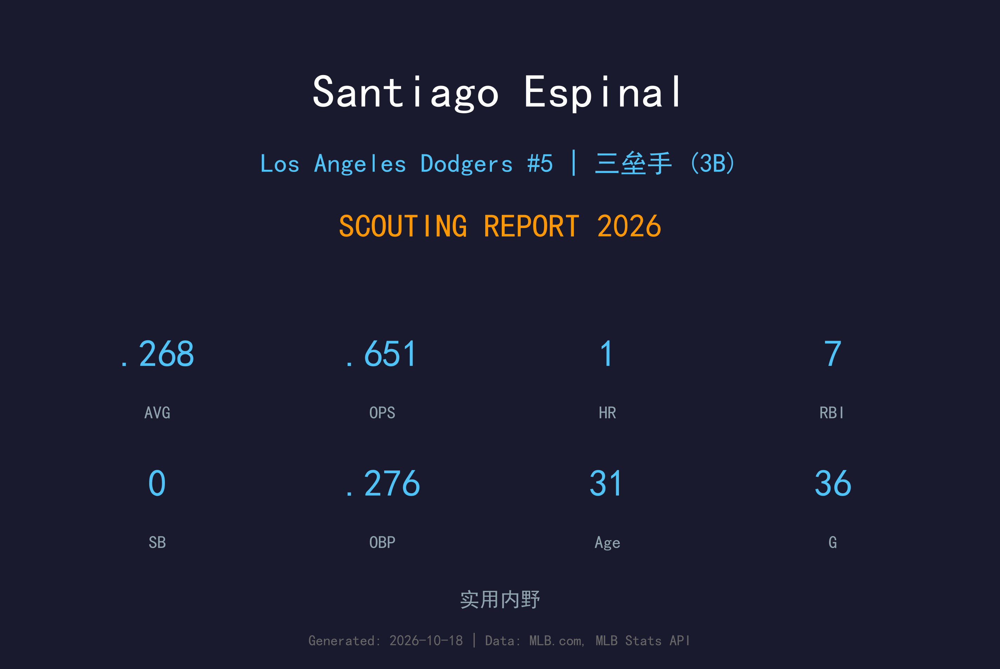
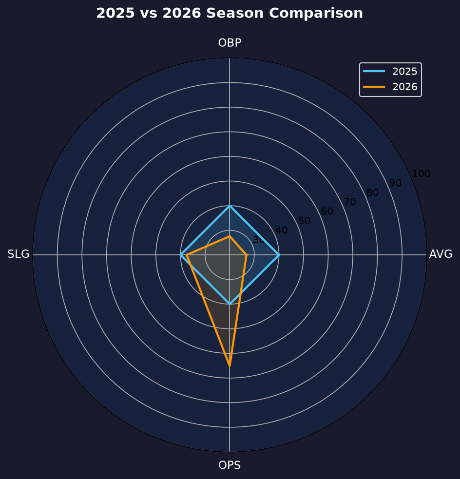
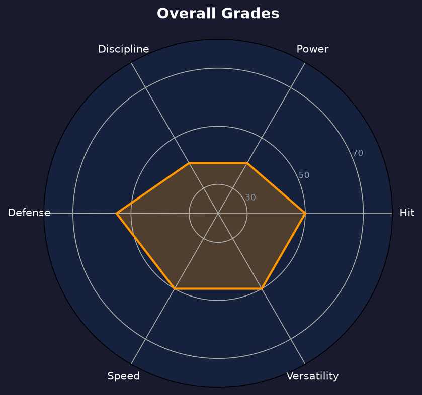

Los Angeles Dodgers | 内野手 | 右投 / 右打 | 2022 美联全明星

Santiago Espinal 是一名31 岁的 veteran 多功能内野手，2022 年曾入选美联全明星。他以防守稳定性和接触能力立足大联盟六个赛季，生涯 615 场缴出 .261/.314/.350。
2026 年 2 月他与道奇签下小联盟合约，3 月 18 日入选开季名单，整季为道奇出赛 36 场，缴出 .268/.276/.375、1 轰 7 分打点。打击率尚可，但整季 60 个打席仅 1 次保送，上垒率几乎与打击率持平，选球纪律是他生涯后期最明显的短板。
他赛季中两度被 DFA、直接下放，7 月 2 日转投游骑兵 3A，7 月 28 日被释出，8 月 20 日与响尾蛇 3A Reno 签约打完赛季。2026 结束时他已不在道奇组织。
生涯巅峰年：135 场 .267/.322/.370、7 轰 51 分打点，凭借二垒与三垒的精英级防守入选美联全明星阵容，MVP 选票获得第 22 名。
92 场缴出 .311/.376/.405，一度成为蓝鸟主力二垒手，是生涯进攻数据最好的一个赛季。
2024 年在辛辛那提打出生涯新高 9 轰、45 分打点；2025 年 114 场却吞下整季 0 全垒打，季后被 outright 成为自由球员。
2 月以小联盟合约加盟道奇并入选开季名单，36 场 .268 后因名单空间两度被 DFA，季中转往游骑兵、响尾蛇体系，赛季末已离队。
小样本警告：36 场 / 60 打席。15 支安打中 3 支二垒打，8 三振 1 保送——K/BB 比 8:1，上垒几乎全靠安打。

| 赛季 | 球队 | G | AVG | OBP | SLG | OPS | HR | RBI |
|---|---|---|---|---|---|---|---|---|
| 2025 | Cincinnati Reds | 114 | .243 | .292 | .282 | .574 | 0 | 16 |
| 2026 | Los Angeles Dodgers | 36 | .268 | .276 | .375 | .651 | 1 | 7 |
2025 年 114 场 0 全垒打、SLG 仅 .282，长打能力已明显退化；2026 年 36 场打出 .375 长打率（3 支二垒打）略好于去年，但 60 打席 1 保送让 OBP 几乎与 AVG 持平——这是他连续第二个赛季选球贡献近乎为零。生涯 615 场 .261/.314/.350 是更可靠的实力参考。
56 个打数 15 安、8 三振，14.3% 的三振率在 utility 内野手中属合格水平，.268 打击率也与生涯均值相符。但整季仅 1 次保送让 OBP 停在 .276——比生涯 .314 低了 38 个点。当一个球员的上垒率与打击率差距只有 8 个点时，他对打序的价值就只剩"把球打进场内"这一项。
Espinal 的二、三垒防守曾是大联盟顶级水准（2022 全明星赛季的看家本领），2026 年在道奇主要作为内野 depth 出场。随着道奇内野年轻化（Freeland、Kim 等人排队），他的防守溢价不足以抵消进攻端的空缺，这解释了他为何在季中两度被 DFA。
道奇开季给他名额，本质上是买一份"熟悉大联盟环境的保险"。36 场之后保险到期：5 月 25 日首次 DFA、 outright 回 3A；6 月 16 日再次 DFA 后他选择自由身，7 月 2 日加盟游骑兵 3A Round Rock，月底被释出，8 月 20 日转投响尾蛇 3A Reno 打完赛季。31 岁的 veteren 一年内横跨三个组织，是典型的名单边缘人漂流轨迹。

防守为骨、选球崩坏的 veteran 内野 depth
B- 级 / 名单边缘
Espinal 的 2027 年大概率仍是小联盟合约加春训邀请的模式。他的防守经验和全明星履历能让各队愿意给他一次竞争名额的机会，但要在开季名单立足，他必须证明 OBP 能回到 .310 以上——过去两个赛季 .292 和 .276 的走势说明这条路越来越窄。
2026：2/17 小联盟合约加盟道奇，3/18 入选开季名单；36 场 .268/.276/.375；5/25、6/16 两度 DFA；7/2 游骑兵 3A（7/28 被释出）；8/20 响尾蛇 3A Reno 打完赛季
2027：小联盟合约 + 春训邀请，争取 utility 内野名额
2028+：若无法回大联盟，可能转向海外联盟或教练体系
Santiago Espinal 1994 年 11 月 13 日出生于多米尼加共和国的圣地亚哥（Santiago de los Caballeros）。2016 年 7 月，他以业余自由球员身份与波士顿红袜签约，从湾岸联盟起步。2018 年 6 月 28 日，红袜把他交易到多伦多蓝鸟，换回老将 Steve Pearce——这笔交易后来被视为蓝鸟捡宝：Espinal 一路从 2A New Hampshire 打上 3A Buffalo，2020 年 7 月 25 日完成大联盟首秀。
2021 年他打出 .311 的打击率，2022 年更上一层楼——135 场 .267、7 轰 51 分打点，凭藉二垒与三垒的精英防守入选美联全明星，还在 MVP 投票中名列第 22。那是他生涯的顶点。此后他的进攻逐年下滑：2023 年 .248，2024 年 3 月被交易到辛辛那提红人后虽然打出生涯新高 9 轰，但 2025 年 114 场吞下整季 0 全垒打，季后被 outright 成为自由球员。
2026 年 2 月，道奇给了他一份小联盟合约。他赢得开季名单席位，为道奇打了 36 场比赛，但在球队年轻化的浪潮中两度被 DFA。他没有抱怨，选择自由身后先后披上游骑兵和响尾蛇的 3A 战袍，把赛季打完。从全明星到一年三队，Espinal 的六年大联盟旅程写满了职业棒球残酷而真实的一面。